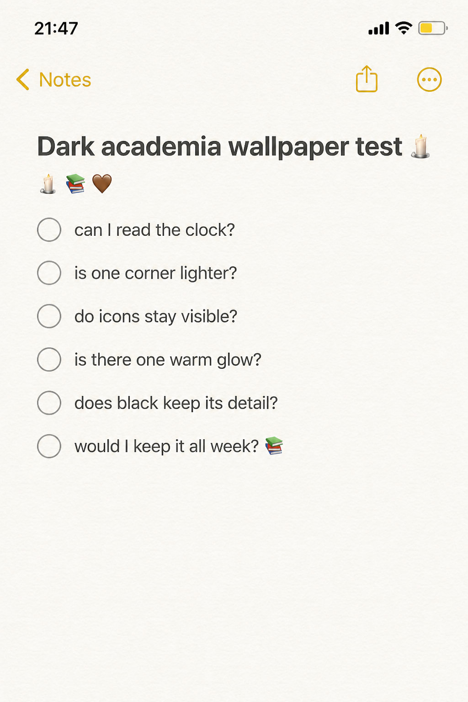
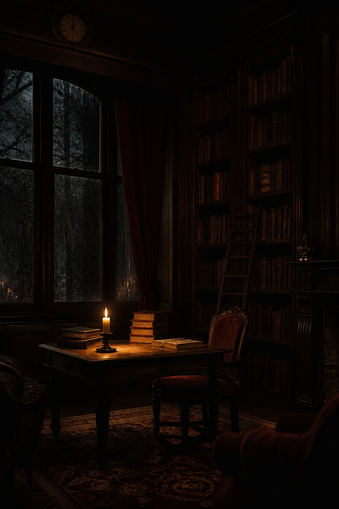
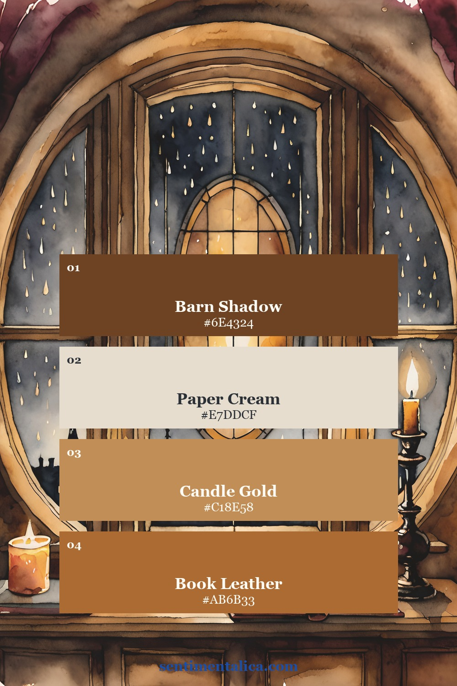
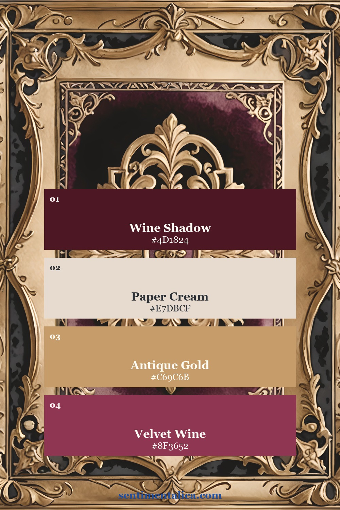
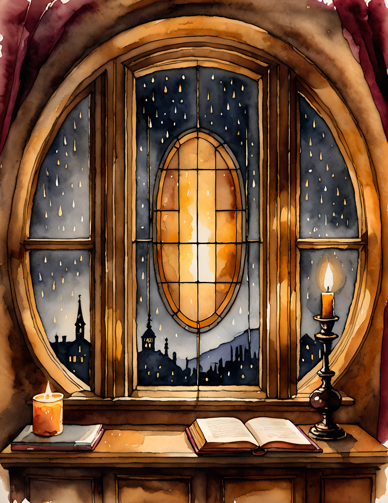
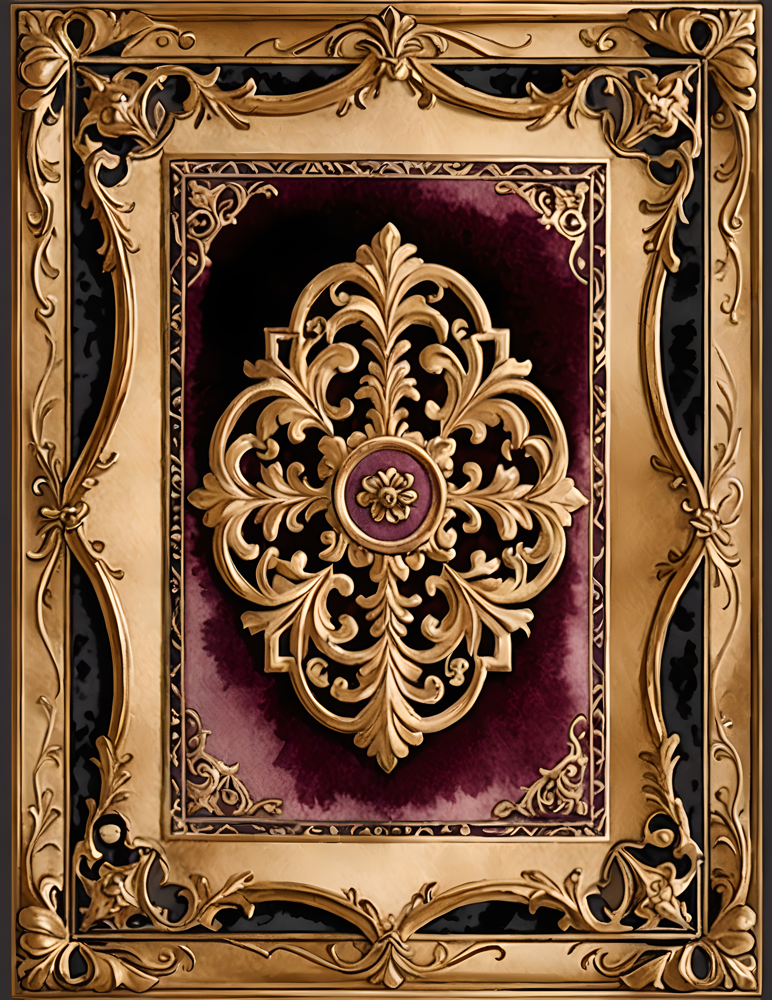

A dark academia wallpaper should feel like the hour after the library closes, not like a black rectangle. The mood comes from readable shadow, worn materials, and one believable source of warmth. If the clock disappears or every brown merges into the same color, the image is simply too compressed or too dark. A few quick checks can keep the atmosphere while making the screen pleasant to use.

Black is not the mood
Begin by lifting the darkest areas enough to see wood grain, a book edge, curtain folds, or the shape of a window. True black can remain in small corners, but it should not swallow half the image. Dark umber, wine, navy, and charcoal create a richer result because the eye can still separate them.
Test the wallpaper with your screen brightness lower than usual. If all the details vanish, edit the shadows rather than increasing overall brightness. This preserves the candlelit feeling and prevents parchment from turning harsh white.
Choose one warm light source
A candle, shaded lamp, fireplace, or moonlit window gives the scene a reason for its highlights. One source is usually enough. Several bright candles scattered around a small phone screen can look like random orange dots and compete with notifications.

Place the warmest light away from the clock if possible. A glow near the middle or lower third naturally guides the eye through the image. It also creates a small point of comfort inside the darker palette.
Make room for information
The top quarter needs enough simplicity for the time. A rain-dark window, faded wall, soft curtain, or shadowed ceiling works well. For a home screen, check the whole image with your actual icons visible. Detailed book spines directly behind small labels are much harder to read than broad areas of wood or fabric.


A dependable palette starts with one deep brown or wine, one paper cream, one muted gold, and one restrained red. The cream gives the eye a resting place. The gold should behave like candlelight, not like a metallic filter across everything.
Use materials instead of symbols
You do not need ravens, skulls, Latin quotations, spectacles, and a tower of books in every image. A scratched desk, frayed velvet, an old key, rain on glass, and one open volume can imply the whole world. Material details feel more believable and leave more quiet space.
If you are making the background from a printable page, create one crop focused on architecture and another focused on a single object. Set both on your phone. The architectural version often feels calmer; the object crop usually feels more intimate.
Two ways to build the archive atmosphere
Book Nook is the direct library route, with candlelight, old books, keys, and rainy windows. Velvet Archive comes from a Victorian sewing world rather than a library, but its burgundy paper, antique ornament, and haberdashery details can add the feeling of a scholar's private workroom. Keeping that distinction clear helps you choose the right material language for your screen or journal page.


The final test is simple: can you read the time, see the texture, and still feel drawn into the room? If yes, the wallpaper is dark enough. Find more slow, useful creative ideas in the Sentimentalica journal.